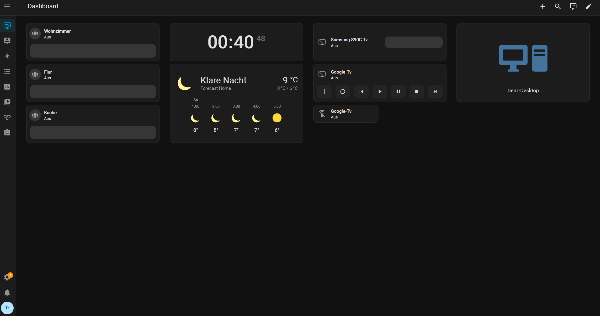

Die Hardware
Auch Home Assistant läuft auf demselben HP Mini PC mit AMD Ryzen 5 PRO 4650GE und 32GB RAM – als LXC Container unter Proxmox. Da Home Assistant sehr ressourcenschonend ist, teilt es sich die Hardware problemlos mit AMP und anderen Diensten.
Was ist Home Assistant?
Home Assistant ist eine Open-Source Plattform zur Heimautomatisierung. Sie läuft lokal im
eigenen Netzwerk und ist nicht auf externe Cloud-Dienste angewiesen. Über ein übersichtliches
Web-Interface lassen sich Smart-Home-Geräte verschiedenster Hersteller zentral steuern,
überwachen und automatisieren.
Bei mir nutze ich Home Assistant unter anderem um meinen Gaming-PC per Wake-on-LAN remote
einzuschalten. So kann ich den PC aus dem Standby holen und mich anschließend über
Moonlight und Sunshine per Gamestream auf ihn verbinden – ohne dass der PC dauerhaft
laufen muss. Zusätzlich habe ich mir ein eigenes Dashboard gebaut, das mir alle wichtigen
Informationen und Steuerelemente auf einen Blick zeigt.

Das Home Assistant Web-Interface – zum Vergrößern klicken
Installation
Home Assistant wird als LXC Container in Proxmox eingerichtet. Die einfachste Methode ist
das Community-Script von tteck (community-scripts.github.io), das den Container automatisch
erstellt und Home Assistant installiert. Nach wenigen Minuten ist das Panel über den Browser
unter http://IP-ADRESSE:8123 erreichbar und führt durch die Ersteinrichtung.
Nächste Schritte
Das Setup wächst langsam aber stetig. Aktuell arbeite ich daran, mich tiefer in das Automatisierungssystem von Home Assistant einzuarbeiten – Regeln die automatisch auf bestimmte Ereignisse reagieren, ohne dass man manuell eingreifen muss. Geplant ist zum Beispiel, den PC automatisch herunterzufahren wenn keine Moonlight-Verbindung mehr aktiv ist. Was davon umgesetzt wird und wie, werde ich hier dokumentieren.